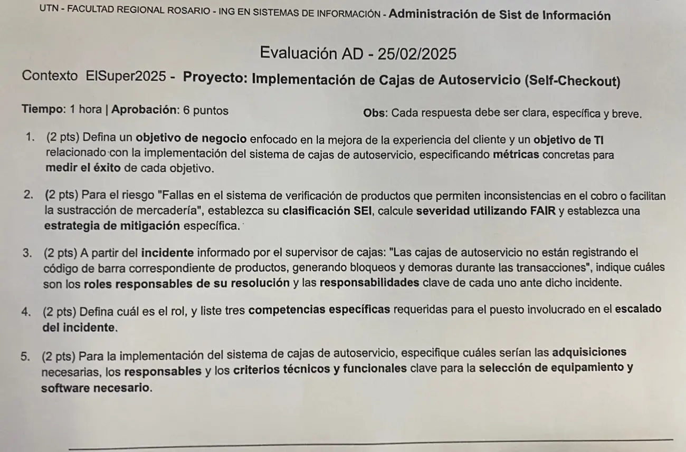

Aprobación directa, 25/02/2025
Aprobación directa, 25/02/2025
Enunciado


Propuesta de respuesta
Respuesta no verificada. La propuso Luta Studios con inteligencia artificial y ningún docente la revisó. Puede tener errores.
1. Objetivos con métricas.
| Tipo | Objetivo | Métricas |
|---|---|---|
| Negocio, experiencia del cliente | Bajar el tiempo promedio de espera en la línea de cajas de 8 a 4 minutos en las horas pico, en los 6 meses posteriores a la instalación | Minutos de espera promedio en hora pico. Satisfacción de 8 o más sobre 10 en la encuesta a la salida |
| TI | Que las cajas de autoservicio estén disponibles el 99 % del horario de atención y lean bien el 99,5 % de los códigos al primer intento, desde el tercer mes | Horas operativas / horas de apertura × 100. Lecturas correctas al primer intento / lecturas totales × 100, de los registros de las cajas |
2. Riesgo dado.
Fallas en el sistema de verificación de productos que permiten inconsistencias en el cobro o facilitan la sustracción de mercadería.
| Clase | Subclase | Elemento |
|---|---|---|
| 2. Fallas de sistemas y tecnología | 2.3 Sistemas | Diseño |
| 1. Acciones de las personas | 1.2 Deliberadas | Robo |
| Factores de FAIR | Valor | |
|---|---|---|
| Probabilidad | Contacto aleatorio en las fallas de lectura e intencional en quien aprovecha la falla. La acción da beneficio, pide poco esfuerzo y tiene poco riesgo de detección si nadie supervisa | 4, probable |
| Impacto | Costo, mercadería perdida y diferencias de caja. Productividad, bloqueos y demoras. Sensibilidad, la reputación si se cobra de más. Volumen, todas las cajas de autoservicio de las sucursales | 3, significativo |
Estrategia de mitigación. Balanza de verificación en la zona de embolsado, que compara el peso de lo apoyado con el peso esperado del producto escaneado y frena la caja ante una diferencia. Alerta al supervisor de cajas y control aleatorio de compras. Cámaras sobre cada caja. Prueba de la base de productos y códigos antes de cada actualización. Baja la probabilidad a 2, y el residual queda en .
3. Roles responsables de la resolución del incidente.
| Rol | Responsabilidades clave |
|---|---|
| Supervisor de cajas | Informa el incidente al Centro de Servicios. Aplica la contingencia, que es derivar a las cajas tradicionales y habilitar más cajas atendidas. Confirma la solución al cierre |
| Analista de mesa de ayuda, primera línea | Registra, busca si pasa en otras sucursales y clasifica con prioridad alta, porque hay clientes esperando. Prueba lo que está en la KB (reiniciar el lector, verificar la sincronización de la base de productos) y escala |
| Técnico de soporte de puntos de venta, segunda línea | Diagnostica el lector, la configuración y el software de las cajas, y la sincronización con la base de productos y precios. Resuelve o escala |
| Proveedor del sistema de autoservicio, tercera línea | Corrige el software o cambia el equipo, según su contrato (UC) |
| Jefe de Sistemas | Escalado jerárquico. Decide apagar las cajas de autoservicio, avisa a la gerencia de sucursales y exige el SLA al proveedor |
4. Rol y competencias del puesto del escalado. El Técnico de soporte de puntos de venta recibe el escalado funcional, diagnostica y resuelve las fallas de hardware y software de las cajas, y coordina con el proveedor. Tres competencias específicas:
- Diagnosticar y configurar lectores de códigos de barras, balanzas y otros periféricos de punto de venta.
- Analizar los registros del software de autoservicio y su sincronización con la base de productos y precios.
- Aplicar control de cambios y versiones para actualizar o volver atrás el software de las cajas sin cortar la venta.
5. Adquisiciones.
| Adquisición | Responsables | Forma |
|---|---|---|
| Terminales de autoservicio (pantalla táctil, lector, balanza, medios de pago) | Gerente de Sistemas con Compras | Licitación o RFP. Compra o leasing |
| Software de autoservicio e integración con el sistema de gestión y stock | Gerente de Sistemas | RFP, licencia o suscripción |
| Instalación, mantenimiento y soporte | Gerente de Sistemas con Legales | Contrato con SLA (UC) |
| Cámaras y elementos antihurto | Seguridad de las sucursales con Compras | Compra |
| Capacitación de supervisores y cajeros | Recursos Humanos con Sistemas | Incluida en el contrato |
| Criterios | Requisitos | Diferenciadores |
|---|---|---|
| Técnicos | Integración con el sistema de gestión, stock y precios. Lector y balanza certificados. Registros de cada transacción | Calidad y certificaciones, costo de repuestos, garantía, servicio técnico con tiempo de respuesta en todas las sucursales |
| Funcionales | Cobro con tarjeta, QR y billeteras. Alerta al supervisor ante una diferencia de peso o un código no leído | Facilidad de uso para el cliente, accesibilidad, experiencia del proveedor en supermercados, capacitación incluida |
Se comparan con una matriz de ponderación y el costo total, .
Respuesta no verificada. Puede tener errores.
Se armó con Objetivos SMART del 1° parcial, SEI, FAIR y estrategias de la gestión de riesgos, escalado de incidentes y perfiles CESSI del 2° parcial, y Adquisiciones del 3° parcial.
Quedó en duda: El contexto ElSuper2025 no está en la materia, así que los puestos y las áreas son supuestos. El riesgo se clasificó en dos clases, de sistemas y de acciones de las personas, porque la especificación incluye la sustracción. Si la comisión pide una sola, queda la de sistemas. La consigna pide respuestas breves y en 1 hora, así que en el examen alcanza con una versión más corta de esto. Las cifras de los objetivos son de ejemplo.
¿Cómo te fue?
Marcá cada tema del examen.
- ObjetivosObjetivos, en 1° parcial
- RiesgosRiesgos, en Final
- IncidentesGestión de incidentes, en 2° parcial
- PerfilesCompetencias y perfil, en 2° parcial
- AdquisicionesAdquisiciones, en Aprobación directa